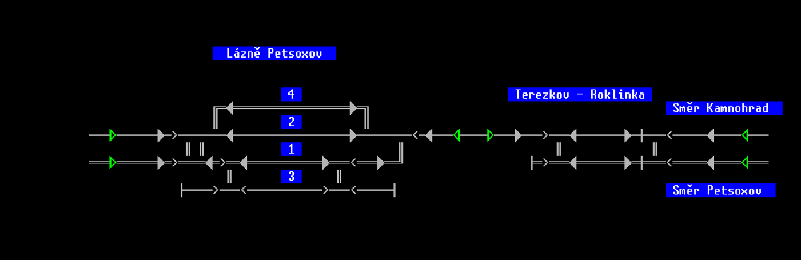

Nápověda
Generátor kreslí kolejiště pro ORMS (Open Rail Management System) v modu OpenComputers. Výsledkem je soubor config.lua, který ORMS vykreslí na obrazovce počítače 160 × 50 znaků a podle kterého ovládá výhybky, návěstidla a přejezdy.

Rychlý start
- Nakreslete koleje. Vyberte nástroj Kolej a táhněte myší. Rovné úseky i oblouky se doplní samy. Když tah začnete nebo skončíte na existující koleji, vznikne výhybka.
- Vložte prvky. Klikněte do buňky a v paletě vlevo zvolte návěstidlo, přejezd nebo popisek. Názvy se číslují samy (Vy1, Vy2 …, S1, S2 …).
- Upravte vlastnosti. Panel Buňka vpravo ukáže, co je v buňce, a nabídne tlačítka pro směr, druh, název a polohu výhybky, takže formát nemusíte psát ručně.
- Opravte problémy. Panel Kontrola průběžně hlídá chyby. Buňky s problémem mají v rohu červený nebo žlutý trojúhelník, klik na hlášení buňku ukáže.
- Zkontrolujte náhled obrazovky OpenComputers pod editorem a dejte Export Lua.
Rozpracované kolejiště se průběžně ukládá v prohlížeči. Tlačítkem Uložit kolejiště uložíte rovnou jako soubor .lua pro ORMS: nejdřív zadáte název, pak vyberete, kam se má uložit.
Ovládání editoru
Nástroje
- Výběr
- Klik vybere buňku, tažením vyberete oblast, klik na číslo řádku nebo sloupce vybere celý řádek nebo sloupec. Psaním začnete upravovat buňku.
- Kolej
- Kreslí trať tažením. Návratem po stejné cestě čáru zkrátíte. Začátek nebo konec tahu na rovné koleji vytvoří výhybku; její hrot se určí podle toho, kam kolej dál pokračuje (typická spojka mezi dvěma kolejemi tak vznikne jedním tahem).
- Štětec
- Kreslí prvek zvolený v paletě do každé buňky, přes kterou táhnete. Pojmenované prvky se číslují postupně.
- Guma
- Maže buňky tažením.
Klávesnice a myš
| ← → ↑ ↓ | posun výběru, s Ctrl o 10 buněk, s Shift rozšíření výběru |
| psaní, Enter, F2, dvojklik | úprava buňky. Enter potvrdí a posune dolů, Tab doprava, Esc zruší. Během psaní se dole ukazuje, jak generátor text chápe. |
| - nebo =, | | napsané samostatně se změní na ═ a ║ |
| Delete | smazat výběr |
| Ctrl+C / X / V | kopírovat, vyjmout, vložit. Formát je kompatibilní s Excelem a Google Tabulkami. |
| tažení za okraj výběru | přesune vybrané buňky jinam (kurzor se změní na šipky), s Ctrl je zkopíruje, jako v Excelu. Celý přesun jde vrátit jedním Ctrl+Z. |
| čtvereček v rohu výběru | tažením rozkopíruje výběr do dalších buněk (jako v Excelu) |
| Ctrl+Z, Ctrl+Y | zpět a znovu (funguje pro všechny úpravy včetně načtení souboru) |
| držení kolečka myši + tažení | posun po kolejišti, funguje v editoru i v náhledu |
| Ctrl+kolečko, tlačítka −/+ dole | zoom mřížky |
| Ctrl+S, Ctrl+O, Ctrl+E | uložit .lua, otevřít soubor, náhled exportu Lua |
| pravé tlačítko | místní nabídka (schránka, rychlé vložení prvku, ukázat v náhledu) |
Souřadnice v záhlaví mřížky (X sloupec, Y řádek) jsou přesně ty, které se zapíší do config.lua, pokud je vypnuté automatické centrování.
Formáty buněk
Každá buňka obsahuje obyčejný text, stejně jako v první verzi generátoru, takže staré soubory .csv i .lua fungují dál. Export čte znaky na pevných pozicích, proto záleží na mezerách.
| Prvek | Zápis | Příklad | Poznámka |
|---|---|---|---|
| Kolej | symbol | ═ | jediný znak, viz symboly |
| Výhybka | A V B název | ═ V ╗ Vy1 | A = základní poloha, B = odbočka; I místo V = invertovaná |
| Návěstidlo | směr N název | ◀ N S1 | druh určuje předpona názvu (Pr, Se, VS/VL, Sc/Lc) |
| Přejezd | symbol P kolej název | ╪ P ═ P1 | ╪ na vodorovné koleji (kolej ═), ╫ na svislé (kolej ║) |
| Popisek | L text | L Nymburk hl.n. | za L musí být mezera |
Písmena V, I, N, P uprostřed jsou jen oddělovače, které generátoru říkají, o jaký prvek jde. Nemají železniční význam.
Koleje a symboly
| Koleje a oblouky | ═ ║ ╔ ╗ ╚ ╝ | jediné symboly, ze kterých se skládají i výhybky |
|---|---|---|
| Zarážedla | ╞ ╡ ╥ ╨ | konec koleje; kolej pokračuje jen na otevřenou stranu (╞ doprava, ╡ doleva, ╥ dolů, ╨ nahoru) |
| Tunely | ⦗ ⦘ ︹ ︺ | portály; ⦗ ⦘ na vodorovné koleji, ︹ ︺ na svislé. ORMS je kreslí modře. |
| Pevná rozvětvení | ╠ ╣ ╦ ╩ | kolej se větví, ale nejde přestavit. ORMS jimi cestu najde, export do SignalCraftu je nepřijme. |
| Přejezdy | ╪ ╫ | viz Přejezdy |
| Hlavní návěstidla | ◀ ▶ ▼ ▲ | šipka ukazuje směr jízdy, pro který návěstidlo platí; ◀ = zprava doleva |
| Předvěsti | ◁ ▷ ▽ △ | |
| Seřaďovací | < > ˅ ˄ |
Symboly, které nejsou na klávesnici, najdete v paletě. Kolej se nejrychleji kreslí nástrojem Kolej.
Výhybky
Buňka výhybky má tvar <symbol1> V <symbol2> <název>, např. ═ V ╔ Vy1. První symbol je vzhled ve vypnutém stavu (základní poloha), druhý ve stavu zapnutém (odbočka). Oba symboly musí mít právě jeden společný konec, to je hrot výhybky. Kontrola upozorní, když tomu tak není nebo když jsou oba symboly stejné.
Invertovaná výhybka. Pokud je fyzický blok výhybky ve světě otočený nebo zapojený obráceně oproti ostatním (po resetu ORMS ukazuje správný symbol, ale fyzicky je výhybka přehozená), použijte místo V oddělovač I, např. ═ I ╔ Vy1, nebo zaškrtněte Invertovaná v panelu Buňka. Symboly a jejich pořadí zůstávají stejné; I jen řekne ORMS, aby pro tuhle výhybku poslal opačný povel.
Názvy výhybek musí být jedinečné, ORMS je ovládá podle názvu.
Přejezdy
Zápis ╪ P ═ P4953: první symbol je vzhled přejezdu, druhý je kolej, po které ORMS hledá cestu (a kterou ukáže, když je přejezd zapnutý), poslední je název. ╪ patří na vodorovnou kolej s druhým symbolem ═, ╫ na svislou s ║.
Přejezd přes více kolejí nakreslete na každou kolej zvlášť se stejným názvem (např. „P4“ nad sebou). ORMS je ovládá společně, SignalCraft je bere jako jeden přejezd.
Popisky (Labels)
Popisek nikdy neumisťujte doprostřed koleje tak, aby ji přerušil (typicky číslo koleje napsané do mezery uprostřed rovného úseku). ORMS s popisky při hledání cesty nepočítá, taková mezera je pro něj neprůchozí díra a cesta pak zbytečně objíždí přes výhybky. Popisek dejte vždy vedle koleje, nad ni nebo pod ni. Kontrola tuhle chybu hlásí.
ORMS popisek vycentruje na buňku, do které je zapsaný, a vykreslí ho jako modrý obdélník široký jako text + 2 znaky, přes všechno ostatní. Delší popisek tak může zakrýt koleje nebo návěstidla vedle. Kontrola to hlásí a náhled to ukazuje přesně. Šířka se počítá v bajtech UTF-8, takže písmena s diakritikou zaberou v ORMS o něco víc místa.
Kontrola
Kontrola běží při každé změně. Chyby znamenají, že export nebo ORMS nebude fungovat správně, upozornění ukazují na pravděpodobný problém, info jen doplňuje.
- neznámý obsah buňky nebo špatný formát (chybějící mezery, „L“ bez mezery, samotný symbol návěstidla bez názvu) – takové buňky by se do Lua tiše nevyexportovaly;
- výhybka se stejnými symboly nebo bez společného hrotu, přejezd se špatnou kolejí;
- uvozovky nebo zpětné lomítko v názvu (rozbily by
config.lua); - dvě výhybky nebo dvě návěstidla se stejným názvem;
- kolej, která nenavazuje na sousední buňku, díra v koleji, popisek uprostřed koleje;
- návěstidlo mimo kolej, předvěst bez hlavního návěstidla, nesoulad předpony a symbolu;
- popisek, který v ORMS zakryje sousední prvky nebo přesáhne okraj obrazovky;
- prvky, které leží mimo viditelnou plochu obrazovky ORMS (sloupec nebo řádek 0 bez centrování) nebo překryjí nadpis.
Export Lua proběhne i s chybami, jen na ně upozorní.
Náhled OpenComputers a centrování
Náhled vykresluje obrazovku 160 × 50 znaků tak, jak to dělá ORMS: stejné barvy (šedé koleje, modré tunely a popisky, bílé názvy), stejné umístění názvů výhybek a návěstidel, stejné pořadí kreslení (popisky přes všechno) i nadpis a tlačítka [Settings], [Route] a [Exit]. Najetím myši vidíte souřadnice, klikem vyberete buňku v editoru.
- Auto-centrování
- Při exportu posune celé kolejiště doprostřed obrazovky (mezi nadpis a spodní řádek s tlačítky), aby nebylo nalepené v rohu. V mřížce můžete kreslit kdekoli. Posun se počítá z toho, co ORMS opravdu vykreslí, tedy včetně šířky popisků a názvů. Vypnuté = souřadnice v
config.luaodpovídají přesně mřížce. - Výhybky, Návěstidla
- Zobrazení názvů, jako přepínače Switch Numbers a Signal Names v nastavení ORMS.
- Přesně jako ORMS
- Současné ORMS názvy zkracuje: u návěstidel vynechá poslední dva znaky (
string.sub(name, 1, -3)), u výhybek začínajících „Vy“ ukáže jenstring.sub(name, 3, -3), takže z „Vy12“ nezbude nic. Název vodorovného návěstidla s lichou délkou po zkrácení navíc padne na půl buňky a nevykreslí se vůbec. Zapnuto ukazuje přesně tohle chování, vypnuto ukazuje celé názvy. - Simulace
- Klikáním v náhledu přehazujete výhybky, zapínáte přejezdy (červeně) a měníte barvu návěstidel, jako v ORMS.
Export, import a soubory
- Export Lua
- Vytvoří obsah
config.luapro ORMS (Config.Signals, Tracks, Switches, Crossings, Labels). Kód zkopírujete nebo stáhnete jako soubor; v OpenComputers jím nahraďteconfig.luav adresáři ORMS. Formát je stejný jako v první verzi generátoru. - Uložit
- Zeptá se na název souboru (pro ORMS
config.lua) a pak otevře okno pro výběr místa uložení. V prohlížečích, které výběr místa neumí (Firefox, Safari), se soubor uloží do Stažených souborů. Buňky s neplatným obsahem se do .lua neuloží, dialog na ně upozorní. Se zapnutým auto-centrováním se uloží vycentrované souřadnice. - Otevřít .csv
- Projekty z první verze generátoru (.csv) jde pořád otevřít.
- Otevřít .lua
- Načte existující
config.luazpátky do mřížky. Soubor lze také přetáhnout myší do okna. - Nový
- Vymaže mřížku. Jde to vrátit přes Ctrl+Z.
Export do SignalCraftu (EMZZ)
Přepínač ORMS / SignalCraft v hlavičce přepne do režimu SignalCraft: místo náhledu OpenComputers se dole otevře panel, kde jde nastavit vše, co by si export jinak odhadl (stavědlo každého prvku, druh návěstidel a koleje skupinových návěstidel, + / − výhybek, dopravní koleje, texty tratí, spřažené výhybky, cesty), a záložka Přístroje ukáže hradla, kličky a závěrníky tak, jak je postaví hra. Nastavení se ukládá s kolejištěm do .lua. Režim zkontroluje kolejiště a vytvoří soubor stanice pro elektromechanické zabezpečovací zařízení v modu SignalCraft. Soubor se vloží do přístroje v dopravní kanceláři, ke kterému se pak SignalBonderem připojí přístroje stavědel.
Stavědla: popisek „L ST1“, „L ST2“ … dejte ke zhlaví, které stavědlo obsluhuje. Výhybky, návěstidla a přejezdy patří k tomu stavědlu, ke kterému mají nejblíž po kolejích.
Tratě: k volnému konci koleje, kudy vede trať do sousední stanice, dejte popisek „L T1 Jméno stanice“ (např. „L T1 Kamenice“).
Dopravní koleje: číslo koleje jako popisek nad kolejí (např. „L 1“, „L K. 3“, „L Kolej 5a“). Na tyto koleje vedou vjezdové cesty.
Přejezdy: přejezd přes více kolejí nakreslete na každou kolej se stejným názvem (např. „P4“ nad sebou). Bere se jako jeden přejezd přes všechny tyto koleje.
Cestová a skupinová návěstidla (Sc, Lc): odjezdová vlaková cesta může začínat u cestového návěstidla na konci koleje a vést přes skupinové odjezdové návěstidlo (např. Sc2 → S2 → trať). Hlavní návěstidla, která cesta míjí ve svém směru, se rozsvítí také; cestové návěstidlo opakuje návěst dalšího hlavního návěstidla (Opak.). Skupinové návěstidlo mezi výhybkami pak samo vlakové cesty nemá. K míjeným návěstidlům je vhodné dát detektor, aby zhasla po průjezdu vlaku.
Vlakové cesty se dopočítají samy: od vjezdového návěstidla na každou dopravní kolej, kam se dá dojet, a od odjezdového návěstidla na každou trať. Vjezdové je návěstidlo, za kterým (proti jeho směru) je bez výhybky rovnou trať.
Kontrola hledá díry v kolejích, popisky v koleji, výhybky bez právě jednoho společného konce (hrotu), návěstidla mimo kolej, dvojí názvy, prvky bez stavědla a tratě bez cest. Chybné buňky se v mřížce podbarví červeně, upozornění žlutě; klik na souřadnice v hlášení buňku ukáže.
Pevná rozvětvení ╠ ╣ ╦ ╩ export nepřijme: v EMZZ se přes ně nedá postavit cesta, nahraďte je výhybkou.
Konvence z reálného provozu
Nic z této sekce ORMS nevyžaduje. Ke správné funkci potřebuje jen správné symboly a předpony popsané výše, zbytek názvu si můžete zvolit libovolně. Konvence ale pomáhají čitelnosti.
Vjezdová a odjezdová hlavní návěstidla se obvykle značí písmenem „L“ nebo „S“ a číslem koleje, pro kterou platí (L1, S3): „L“ pro směr jízdy od začátku trati (vlaky liché), „S“ pro směr od konce trati (vlaky sudé).
Výhybky i návěstidla se ve stanici číslují postupně od začátku trati ke konci (podle rostoucí kilometrické polohy). Pokud jsou dvě výhybky ve stejné poloze (rozvětvení), nižší číslo dostane ta vlevo. Hlavní kolej má číslo 1 (na dvoukolejné trati 1 a 2), koleje vlevo při pohledu ke konci trati dostávají lichá čísla (3, 5, 7 …), koleje vpravo sudá (2, 4, 6 …).